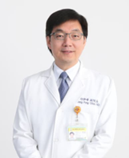

<!DOCTYPE html>
<html lang="en">

<head>
    <meta charset="UTF-8">
    <meta name="viewport" content="width=device-width, initial-scale=1.0">
    <link rel="stylesheet" type="text/css" href="./styles/AvaChi.css">
    <link rel="stylesheet" type="text/css" href="./styles/AvaMedia.css">
    <link href='https://fonts.googleapis.com/css?family=Kanit' rel='stylesheet'>
    <link rel="preconnect" href="https://fonts.googleapis.com">
    <link rel="preconnect" href="https://fonts.gstatic.com" crossorigin>
    <link href="https://fonts.googleapis.com/css2?family=Noto+Sans+TC:wght@300&display=swap" rel="stylesheet">
    <script src="https://ajax.googleapis.com/ajax/libs/jquery/3.5.1/jquery.min.js"></script>
    <title>AvatarMedicine</title>
</head>


<body>
    <!--top-->
    <div class="topboard">
        <div class="topboard-left">

            <div class="topboard-left-1">替身醫療論壇</div>
            <div class="topboard-left-2">Avatar Medicine Forum</div>

        </div>
        <div class="topboard-middle"></div>
        <div class="topboard-right">
            <div class="TBR-items-NULL"></div>
            <div class="TBR-items-NULL"></div>
            <div class="TBR-items-NULL"></div>
            <a href="Forum.html" class="TBR-items">
                <div>繁體中文</div>
            </a>
            <a href="ForumEN.html" class="TBR-items">
                <div>English</div>
            </a>
            <!-- 下拉選單觸發器 -->
            <div class="dropdown-trigger">選單</div>
            <div class="dropdown-menu">
                <a href="#forum" class="TBR-items">
                    <div>論壇介紹</div>
                </a>
                <a href="#VIP" class="TBR-items">
                    <div>貴賓</div>
                </a>
                <a href="#talker" class="TBR-items">
                    <div>演講者</div>
                </a>
                <a href="#agenda" class="TBR-items">
                    <div>活動議程</div>
                </a>
                <a href="https://www.cancerfree.io/zh-tw/index" class="TBR-items">
                    <div>聯絡我們</div>
                </a>
            </div>
        </div>
    </div>
    <div class="topboard-coverd"></div>
    

    <!--Contant-->
    <div class="imageKV"> </div>
    <div class="gradient-background">
        <div class="session">
            <div class="session_title">
                <div class="session_title_txt", id="forum", style="color: aliceblue;">論壇介紹</div>
            </div>
            <div class="IM_contant", style="color: aliceblue;">
                <p>
                    替身醫療論壇主要推廣虛擬和實體替身應用於患者治療之上的概念，讓大家瞭解替身醫療可能降低其在治療過程中所需承擔的風險，並且可以跨越距離及時間的限制。​​推廣技術層面包含類器官、模式生物、大數據、元宇宙...等，讓一般大眾用新的角度了解目前這些技術開發有潛力替代病患本身並降低醫療上的風險，同時串聯學界及產業界，讓有潛力的技術或產品可以曝光。 
                </p>
                <p>&#20;</p>
                <p>
                    此次論壇邀請到產官學研重量級講者來與我們分享後疫情時代所帶來的替身醫療的改變及發展。以期在不久的將來，透過大數據、AI、AR/VR/XR或NFT就可以讓虛擬替身實現於臨床及教學上。 
                </p>
                <p>&#20;</p>
            </div>
        </div>


        <div class="session">
            <div class="session_title">
                <div class="session_title_txt", id="VIP", style="color: aliceblue;">貴賓</div>
            </div>
            

        </div>

        <div class="session">
            <div class="session_title">
                <div class="session_title_txt", id="talker", style="color: #000000;">演講者</div>
            </div>
            <div class="vip_intro normal-direction">
                <div class="vip_photo">
                    
                </div>
                <div class="vip_margin">
                    <div class="vip_name">Dr. Mister</div>
                    <div class="vip_title">Lixte Biotechnology Holdings, Inc.的首席醫療官</div>
                    <div class="vip_description">
                        <p>Dr. Miser是小兒血液學/腫瘤學領域的傑出專家，以其對開發創新的抗癌療法，造福罹患兒童的貢獻，享譽全球。他目前擔任台北醫學大學醫學科學技術學院的講座教授職位，同時擔任美國加州帕薩迪納的Lixte Biotechnology Holdings, Inc.的首席醫療官。</p>
                        <p>在他卓越的職業生涯中，Dr. Miser曾擔任許多崇高的領導職務，包括前小兒科主任，前小兒血液學/腫瘤學部主任，尤其是前美國加州杜爾蒂市City of Hope國家醫療中心的總裁和首席執行官，以及首席醫療官。</p>
                        <p>除了臨床專業知識外，Dr. Miser積極參與各種委員會和組織，對癌症研究產生了重要影響。他是軟組織肉瘤策略小組的核心成員，並在新藥執行和指導委員會中擔任重要角色，同時擔任兒童癌症研究組的第二階段協調員。此外，他還擔任了國家Wilms腫瘤協會的數據監測委員會主席。</p>
                    </div>
                </div> 
            </div>

            <div class="vip_intro reverse-direction">
                <div class="vip_photo">
                    
                </div>
                <div class="vip_margin">
                    <div class="vip_name">Luke Dimasi</div>
                    <div class="vip_title">Emulate, Inc.的高級產品管理總監</div>
                    <div class="vip_description">
                        <p>Luke Dimasi是一位傑出的市場營銷和產品管理專業人士，在生命科學和生物技術工具行業擁有超過15年的豐富經驗。目前擔任Emulate, Inc.的高級產品管理總監，Dimasi 帶領團隊開發並推向市場的產品，賦予科學研究更多的力量，讓客戶滿意無比。</p>
                        <p>Dimasi 真正的天賦在於深刻了解客戶，並將他們的見解有效轉化為成功策略。他對科學技術營銷帶來充滿活力和富有想象力的方法，持續推動產品的發展，確保商業執行的成功。</p>
                        <p>憑藉在細胞和分子生物學領域的背景，以及扎實的產品管理、產品組合開發和商品化基礎，Dimasi 的經驗領域十分廣泛。他的專業涵蓋藥物發現和開發、生物處理、基因組學和細胞生物學研究，包括幹細胞生物學和細胞治療等。</p>
                    </div>
                </div> 
            </div>
            
            <div class="vip_intro">
                <div class="vip_photo normal-direction">
                    
                </div>
                <div class="vip_margin">
                    <div class="vip_name">呂隆昇</div>
                    <div class="vip_title">台北醫學大學附設醫院 細胞治療中心主任</div>
                    <div class="vip_description">
                        <p>呂隆昇博士是台灣台北醫學大學的副教授，同時在生醫材料暨組織工程研究所、國際生醫工程博士學位學程和細胞治療與再生醫學國際博士學位學程擔任合聘副教授。他同時也是台北醫學大學附設醫院的主治醫師。</p>
                        <p>在他豐富的學術和職業生涯中，呂隆昇博士擔任了多項重要職務，其中包括自2023年4月起成為台北醫學大學癌症轉譯研究中心的副主任。此外，自2022年起，他在台北醫學大學細胞治療與再生醫學國際博士學位學程和生醫材料暨組織工程研究所擔任副教授。</p>
                        <p>呂隆昇博士於2007年獲得專案擴增留學獎學金，展現了他在學術和研究領域的優秀成就。他的研究興趣廣泛，包括轉譯放射生物學、放射腫瘤學、心血管生物學和生醫光學等。</p>
                    </div>
                </div> 
            </div>

            <div class="vip_intro reverse-direction">
                <div class="vip_photo">
                    
                </div>
                <div class="vip_margin">
                    <div class="vip_name">劉逸軒</div>
                    <div class="vip_title">台灣大學動物科學技術學系教授</div>
                    <div class="vip_description">
                        <p>劉逸軒教授是一位在發育生物學與再生醫學領域卓有成就的學者，並於台灣大學擔任動物科學技術學系教授。同時，他還在台灣大學獸醫專業學院合聘，為學術領域帶來深遠的影響。</p>
                        <p>在學經歷方面，劉逸軒教授於2009年開始在台灣大學動物科技系展開其卓越的學術生涯。此後，他於2013年起擔任台灣大學獸醫專業學院的職位，展現他在獸醫學術領域的專業知識。</p>
                        <p>在國際學術界，劉逸軒教授也曾於賓州大學進行博士後研究，在2007年至2009年期間拓展了其學術視野。而他的博士學位則於北卡羅萊納州立大學完成，他在2002年至2007年期間積極鑽研學問，為後來的學術生涯奠定了穩固的基礎。</p>
                        <p>憑藉他的優異學經歷和廣泛的專業背景，劉逸軒教授在發育生物學與再生醫學領域取得傑出的研究成果，對於學術界和相關研究領域作出重要貢獻。他的學術洞見和專業知識使得他成為學術界受人尊敬的講者之一。</p>
                    </div>
                </div> 
            </div>

            <div class="vip_intro normal-direction">
                <div class="vip_photo">
                    
                </div>
                <div class="vip_margin">
                    <div class="vip_name">邱仲峰</div>
                    <div class="vip_title">北醫學大學附設醫院院長</div>
                    <div class="vip_description">
                        <p>邱仲峰醫師目前擔任多個重要職位，包括臺北醫學大學附設醫院院長、臺北癌症中心質子中心召集人、臺北醫學大學醫學系教授、台灣放射腫瘤學會理事長以及臺灣安寧照顧基金會董事。同時，他也是國民健康署國家型三年計畫「安寧靈性關懷人員培訓與民間宣導推廣計畫」的主持人（2017-2019）以及財團法人基督教史懷哲宣道會的董事長</p>
                        <p>邱醫師的主治專長包括光子刀治療、IMRT、螺旋刀治療(TOMO)、放化學及標靶合併治療、動態式弧形刀放射手術、輔助及完整醫療CAM、癌症基因定序、癌症靈性關懷以及磁振導航超音波熱治療(MRgFUS)。</p>
                        <p>他的學歷包括國防醫學院醫學科學研究所博士學位，以及臺北醫學大學醫學系和醫管碩士學位。他同時也是臺北醫學大學醫學系畢業生。</p>
                        <p>在經歷方面，他曾擔任臺北癌症中心院長和臺北醫學大學管發中心主任。此外，他還是臺灣安寧緩和醫學會的理事，並曾擔任美國Montefiore Medical Center的客座教授(Visiting Scholar)。</p>
                    </div>
                </div> 
            </div>

        </div>

        <div class="session", style="height: 85vw";>
            <div class="session_title">
                <div class="session_title_txt", id="agenda", style="color: black;">活動議程</div>
                <div class="agenda">
                    
                </div>
            </div>
        </div>


        <div class="session">
            <div class="faq">
                <div class="session_title">
                    <div class="session_title_txt", style="color: black;">FAQ</div>
                        <div class="faq-item">
                        <ul>
                            <li>    
                                <div class="qa-title">何謂替身醫療 </div>
                                <div class="qa-content">
                                    替身醫療 (Avatar Medicine)旨在運用一個虛擬或實體的替身來代替病患本身來降低其在治療過程中所需承擔的風險，並且可以避免距離或時間的限制。
                                </div>
                            </li>

                            <li>
                                <div class="qa-title">什麼是實體替身 </div>
                                <div class="qa-content">
                                    透過來自人體的檢體或是與人體相似的模式生物，模擬一部份人體的疾病狀況，透過外界刺激觀察生物性反應，進而執行研究開發、檢測診斷以及治療協助。​ 
                                </div>
                            </li>

                            <li>
                                <div class="qa-title">什麼是虛擬替身 </div>
                                <div class="qa-content">
                                    「虛擬替身」是透過來自人體的數據，在虛擬世界模擬出影像或模型，再透過運算進行預測，進而執行臨床諮詢、檢測診斷以及治療協助。 
                                </div>
                            </li>

                            <li>
                                <div class="qa-title">什麼是元宇宙 </div>
                                <div class="qa-content">
                                    一個由人工智能、虛擬實境、5G、大數據、數字資產和虛擬身份組成的世界。你可以在這個空間隸面工作、娛樂、購物、和玩遊戲….。 
                                </div>
                            </li>

                            <li>
                                <div class="qa-title">參加替身醫療論壇需要多少費用? </div>
                                <div class="qa-content">
                                    不需花費任何費用。只需花費您的2個小時的時間而已!!
                                </div>
                            </li>

                            <li>
                                <div class="qa-title">如何報名?</div>
                                <div class="qa-content">
                                    只要上活動頁面連結網址，留下您的聯絡方式就可以囉!!
                                </div>
                            </li>

                            <li>
                                <div class="qa-title">NFT 是什麼</div>
                                <div class="qa-content">
                                    NFT全名為Non-Fungible Token，中文意思為非同質化代幣。意思是「貨品或是人物具有可以直接與對方交換的特質。」 
                                    簡單來說，NFT就是將數位作品給他一個專屬代碼，當你購買這一個數位作品時，會連同代碼一起買下，即便你一次擁有多個同樣的作品(例如圖片、影像等)，也會因為代碼的不同，而被當作不同作品。 
                                </div>
                            </li>

                            <li>
                                <div class="qa-title">如何取得NFT</div>
                                <div class="qa-content">
                                    首先您必須要有一個錢包來支付交易手續費。並且參加本年度的論壇， 掃描畫面中出現的QR code，就可以Free Mint獲得限量NFT。 
                                </div>
                            </li>

                            <li>
                                <div class="qa-title">如何取得錢包</div>
                                <div class="qa-content">
                                    錢包可以將它想像成虛擬世界的護照，目前在以太坊區塊鏈上最主流的錢包，俗稱小狐狸錢包。 
                                </div>
                            </li>

                            <li>
                                <div class="qa-title">發行張數</div>
                                <div class="qa-content">
                                    5000張；一人限領1張。 
                                </div>
                            </li>

                            <li>
                                <div class="qa-title">NFT可以做什麼用</div>
                                <div class="qa-content">
                                    追蹤精拓生技Facebook及Twitter(@CancerFreeBio)留意每月抽獎活動訊息，就可憑本年度的論壇所獲得的NFT參加抽獎活動。 
                                    本NFT 2級市場所得的收入，將作為捐贈兒童癌症病童免費使用精拓生技EVA Select服務或相關治療。 
                                </div>
                            </li>
                        </ul>

                    </div>
                </div>
            </div>
        </div>
        
    </div>
    <div class="white-board">
        <div class="session">
            <div class="session_title">
                <div class="session_title_txt", style="color: black;">報名連結</div>
            </div>
            <div class="portal">
                <div class="portal-left">
                    <a href="https://www.accupass.com/go/Avatar2023">
                        
                    </a>
                </div>
                <div class="portal-right">
                    <a href="https://www.eventbrite.com/e/avatar-medicine-forum-2023-tickets-697936054527?aff=oddtdtcreator">
                        
                    </a>
                </div>
            </div>
        </div>

        <div class="session">
            <div class="session_title">
                <div class="session_title_txt", style="color: black;">主辦單位</div>
            </div>
            <div class="organizer">
                
            </div>
        </div>

        <div class="session">
            <div class="session_title">
                <div class="session_title_txt", style="color: black;">贊助單位</div>
            </div>
            <div class="sponsor">
                
            </div>
        </div>
    </div>

    <div class="endboard">
        <div class="endboard-up">
            <div class="contact_us">聯絡我們</div>
        </div>
        <div class="endboard-down">
            <div class="phone">電話: +886-2-27322701</div>
            <div class="address">地址: 台北市內湖區瑞光路258巷56號3樓之2</div>
        </div>    
    </div>

    <!--xxxxxxxxxxxxxxxxxx-->
	<a href="#top">
		<div class=go-top></div>
	</a>
	<div class="lefticon"></div>
	<div class="dogicon"></div>
</body>

<script>
    /*QA click*/
    $(".qa-title").click(function () {
        $(".qa-content").slideUp();
        $(".qa-title.on").removeClass("on");
        $(this).next().stop().slideDown();
        $(this).stop().addClass("on");
    });

    /*移移動偏移往上*/ 
    $(document).ready(function(){
    $('a[href^="#"]').on('click', function(event) {
        var target = $(this.getAttribute('href'));

        if(target.length) {
            event.preventDefault();

            // 滾動偏移量
            var offset = 130; // 你可以調整這個值來改變滾動的偏移量，正數表示偏上，負數表示偏下

            $('html, body').stop().animate({
                scrollTop: target.offset().top - offset
            }, 1000);
        }
    });
    });

    /*禁止手機用戶左右活動*/
    document.addEventListener('touchstart', function(e) {
    let startX = e.touches[0].pageX;
    let startY = e.touches[0].pageY;
    
    document.addEventListener('touchmove', function(e) {
        let moveX = e.touches[0].pageX;
        let moveY = e.touches[0].pageY;
        
        // Check if horizontal move is larger than vertical move
        if (Math.abs(moveX - startX) > Math.abs(moveY - startY)) {
            e.preventDefault();
        }
        }, { passive: false });
    }, { passive: false });


</script>

</html>